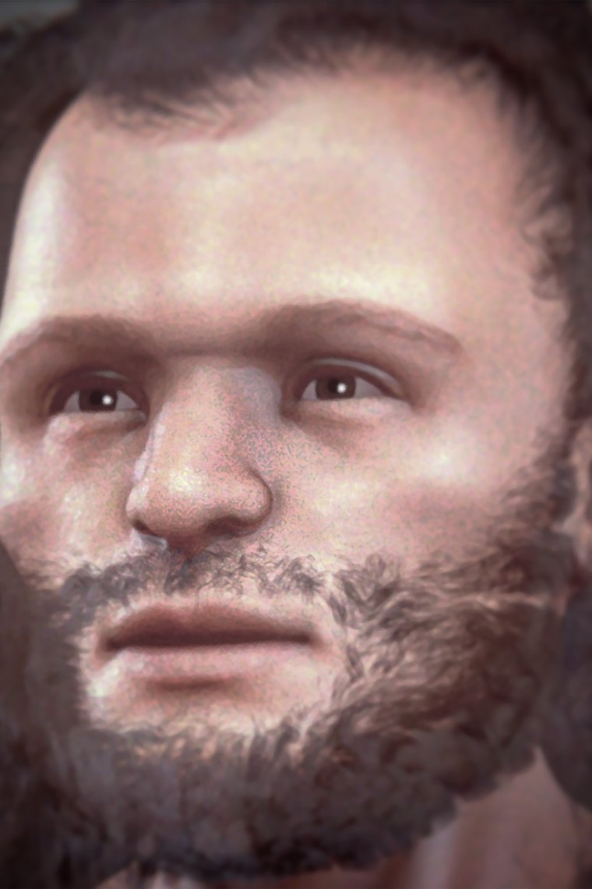

Forensic facial reconstruction of a Cro-Magnon man, an early European Homo sapiens
Photo/artwork by Cicero Moraes, via Wikimedia Commons, licensed under CC BY-SA 4.0. Cropped and resized for this site.
Homo sapiens
The last human standing — a symbol-making, story-telling, world-spanning ape.
Overview
Homo sapiens — anatomically modern humans — emerged in Africa by at least 300,000 years ago. The ~315,000-year-old fossils from Jebel Irhoud in Morocco, alongside finds at Omo Kibish and Herto in Ethiopia, show that our origin was a pan-African, gradual process rather than a single 'Garden of Eden' moment.
We are the only one of all the species on this timeline still alive — but, through interbreeding, we carry fragments of several of the others inside us.
Anatomy & Body
Modern humans are distinguished by a high, rounded ('globular') braincase, a small flat face tucked beneath the brain, a prominent chin, and a lightly built skeleton. The globular brain shape — not just its size — is one of our defining and most recent features.
Brain & Cognition
Our brains (~1,350 cc on average — interestingly, slightly smaller than the Neanderthal average) are reorganised for complex language, abstraction, planning and cumulative culture. The capacity to accumulate and transmit knowledge across generations is arguably our true superpower.
Behavior & Culture
Beginning in Africa, H. sapiens developed pigments, beads, engraved ochre, long-distance exchange, projectile weapons and, later, spectacular cave art. This symbolic, cumulative culture let us adapt to virtually every environment on Earth — and, eventually, to leave it.
The deep history of how we then spread across the planet is told in the next chapter of this site: the genomic record of ancient human migration.
Key Fossils
- Jebel Irhoud (Morocco, ~315 ka) — the oldest known H. sapiens fossils.
- Omo Kibish & Herto (Ethiopia) — key early African moderns.
- Cro-Magnon (France) — early modern Europeans associated with rich Upper Palaeolithic culture.
Genetics & Legacy
Every living person descends from these African populations. As our ancestors expanded out of Africa from ~70,000 years ago, they met and interbred with Neanderthals and Denisovans — which is why those vanished cousins live on in our DNA. The story of where we went next is reconstructed, genome by genome, in the migration analysis that follows.
Discovery & history
Our own species has no single discovery moment, but its accepted age has roughly doubled in the last twenty years, and the story of how is worth knowing.
In 1967 a team led by Richard Leakey recovered hominin remains at Omo Kibish in southern Ethiopia. The material was clearly modern in form but hard to date precisely. A 2005 redating placed it near 195,000 years, and a 2022 study of the overlying volcanic ash pushed the minimum age to at least 233,000 years. In 1997 Tim White's team found the Herto crania in the Middle Awash, dated to about 160,000 years and assigned to the subspecies Homo sapiens idaltu.
The largest revision came from North Africa. Fossils from Jebel Irhoud in Morocco had been excavated since the 1960s and long assumed to be around 40,000 years old. Jean-Jacques Hublin's team re-excavated the site and, in 2017, published new thermoluminescence dates of roughly 315,000 years. The faces were essentially modern; the braincases were not yet globular.
Debates & open questions
Where in Africa did we originate? The old model imagined a single cradle — most often East Africa — from which modern humans spread. Jebel Irhoud is hard to square with that, sitting at the opposite corner of the continent at an early date.
The alternative now gaining ground is African multiregionalism, or the pan-African model, set out by Eleanor Scerri and colleagues in 2018. On this view Homo sapiens did not emerge in one place but from a set of populations spread across Africa, intermittently connected and separated as the Sahara alternated between green and arid. Modern traits would have appeared at different times in different regions and been assembled through gene flow. Genomic work on structured ancestral populations has since supported a version of this picture.
What counts as "modern"? Anatomical modernity — a globular braincase, a retracted face, a chin — and behavioural modernity do not appear together. Jebel Irhoud has the face but not the brain shape.
Whether behaviour changed suddenly or gradually is its own dispute. The older "human revolution" model saw symbolic behaviour appearing abruptly around 50,000 years ago, largely on European evidence. African sites have steadily undercut it: engraved ochre from Blombos at about 77,000 years, shell beads older still, and pigment use older again. The current weight of evidence favours gradual accumulation, with the apparent European "revolution" reflecting where archaeologists looked first.